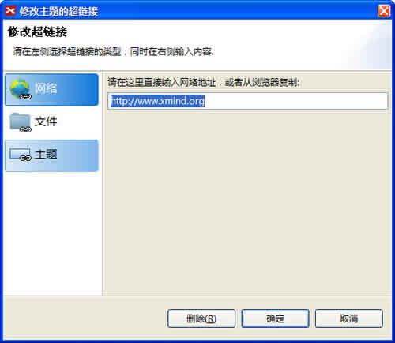
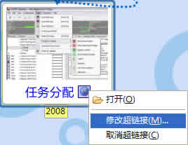

XMIND中的主题都可以被添加一个超链接。通过超链接您可以将因特网上的某个特定内容、本地的某个文件夹链接到思维图中，从而增强了您的思维图的内容的丰富性。
您可以方便地添加超链接、修改以及删除已有的超链接。 方法如下：
按照下列步骤添加超链接：
- 选中一个主题；
-
按照下列三种方式中一种打开添加对话框：
- 在菜单选择“插入 > 超链接”。
- 点击工具栏上的超链接图标。
- 使用快捷键“Ctrl+H”（Mac用户请使用 Command + H）。
- 在对话框中输入URL（例如: http://www.xmind.org）, 点击确认。

按照下列步骤打开超链接：
- 选中超链接所在的主题；
-
下列两种方法均可打开超链接：
- 按住 Alt键，点击此主题。XMIND会在浏览器视图中打开此超链接。
- 点击主题中的超链接图标，打开鼠标右键菜单，选择“打开…”。
按照下列步骤修改或者删除超链接：
- 选中超链接所在的主题；
- 选中主题上的超链接图标，打开鼠标右键菜单，选择“修改超链接”或者“取消超链接”。

按照下列步骤添加本地文件夹链接：
- 选中主题；
-
打开添加超链接对话框；
- 在菜单选择“插入 > 超链接”。
- 点击工具栏上的超链接图标。
- 使用快捷键“Ctrl+H”（Mac用户请使用 Command + H）。
- 输入文件夹对应的地址，点击确定完成。
注意：
- 每个主题至多只能添加一个超链接。
- 添加的某些本地文件需要您收到通过其地址选择打开。
您可能还对以下内容感兴趣……